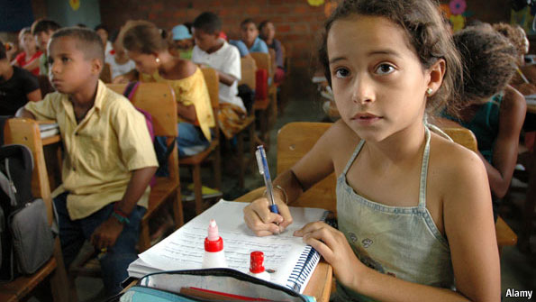
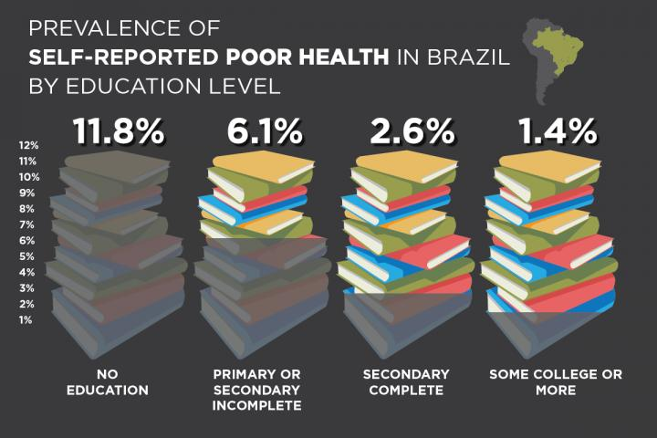
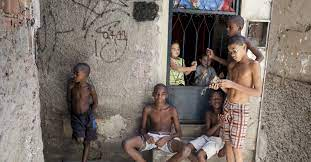
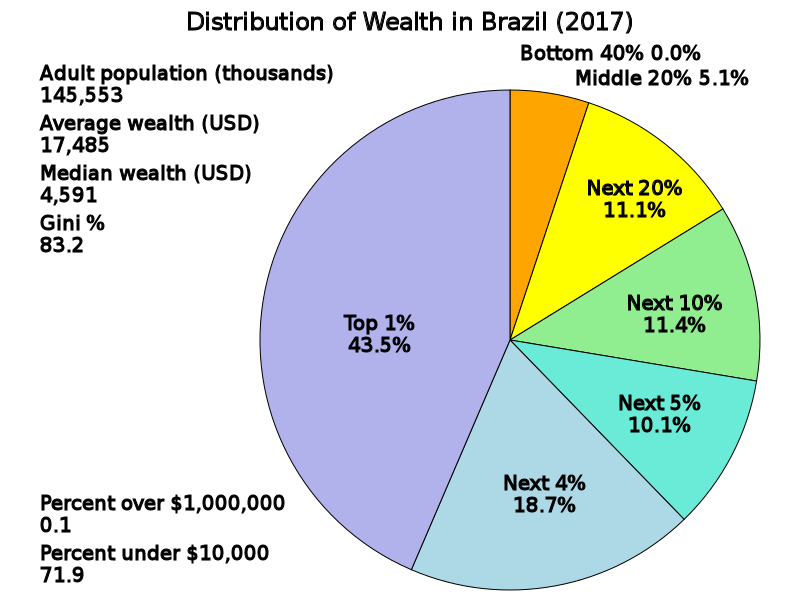
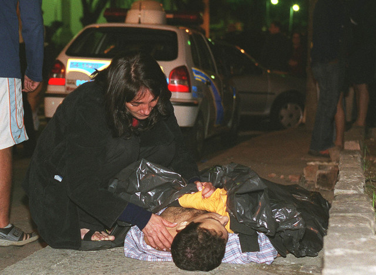
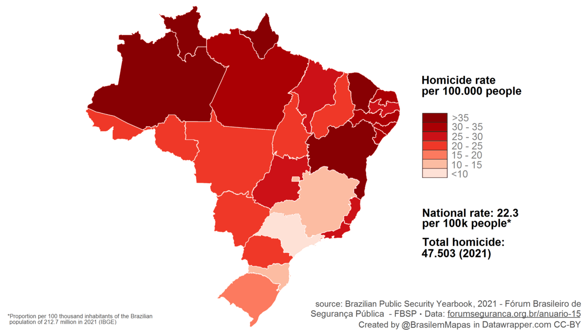

The World Health Organization (WHO) defines Quality of Life (QoL) as an individual's perception of their
position in life in the context of culture and value systems in which they live and in relation to their
goals, expectation, standards and concerns. Citizens in Brazil will have very different outlooks on their
quality of life depending on where they live as access to resources varies greatly. The large disparity gap
between uppper and lower clases in the country driven by corrupt government and business practices has
affected social issues such as education, housing, and crime.
Although there are difficult living conditions and limited resources for a large portion of the
population, there is still a strong culture that thrives and an environemnt that attracts many visitors
around the world. Many of the social issues that the country is facing have been exposed globally and there
is more awareness now to see how these issues are being handled by the governemnt.
Continue reading more below to find out how the country is working towards addressing social issues
pertaining to the U.N. goals for providing quality education, reducing poverty, and improving health and
well-being.


Access to quality education has been a challenge for many citizens of Brazil. The education
system is divided and has a history of low equality, however policies has been implemeneted to
set a change in motion.
In 2014, the country introduced the National Education Plan, which sets goals for improving the
quality of education for all social-economic groups at all levels and a target for investments
into education system. This plan aims to combat exclusion through education as knowledge and
skills acquired gives individuals more social and economic opportunity. Through increased
funding, cities are able to improve schools infrastrucure as well as provide more resources for
students and teachers.
These initiatives show that the Brazillian government recognizes issues within the education
system and is working towards improving the quality and access across their nation. As the
countries workforce education grows it will directly contribute to the economy by creating
opportunities that promote prosperity.


It is apparant in some of Brazils major cities the amount of poverty and inequality seen in
urban areas. Improper and corrupt management in the Brazillian government has created issues and
a large gap in dispartity between economic groups. Although politics have created many of these
problems, there are still some key initiaves that have been implemented to give opportunity to
lower-income groups.
The most popular measure that has been created to address poverty is the Bolsa Familia program.
Introduced in 2003 by president Lula da Silva, the program offers cash transfers to low-income
families on the condition that they send their children to school, receive healthcare, and are
properly vaiccinated. This government inititaive has done a great deal to support those in
poverty and helped to improve health and education among many families. Due to the
succesffulness of the program, it has been expanded to cover more families that are impacted. In
addition to this program, the government has also implemented tax reforms created to reduce
economic inequality by taxing higher-income earners and distributing the money to fund social
programs that benefit those in poverty.
Seeing success in these programs and initiatives provides good feedback for continued
investment. The country has come a long way since addressing these issues, but will need to
continue support these programs to further promote economic growth and eliminate poverty and
economic inequality.


The health and well-being of Brazillians has been disrupted throughout the nations history
resulting from economic instability and crime. Brazil has some of the highest rates of crime due
to corruption in law enforcement and politics as well as a large involvement in organized crime
and gangs. In recent years, the country has made significant changes to promote the health and
well-being of citizens in order to improve their quality of life.
Although there is still a need for more healthcare infrastrucutre, the government provides free
healthcare to all Brazillian citizens through the Unified Health System (SUS). This has helped
to greatly increase life expectancy by improving health outcomes for the sick and reducing
infant mortality rates to those that have access to these resources. Along with this free
healthcare system, the government also has a national immunization program that provides free
vaccines to all citizens which was introduced to combat the prevelance of infectious diseases.
Families that reside in more uinderserved areas of the country have access to a system called
the Fmaily Health Strategy, which is a healthcare programs that provides care to families inside
their homes or with an established community health center.
These programs and inititaves created by the government show that they are taking appropriate
action to tackle some of the economic challenges families in the nation face, however these
measures are easier to implement when there are limited resources. In order to improve quality
and access through the country, they should look into more initiatives that will promote
healthcare infrastructure so that access to these resources is expanded to more groups.